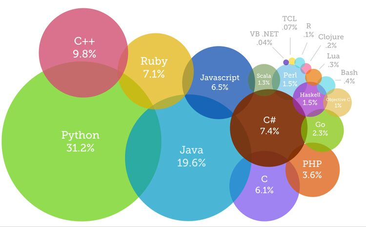

Programming Languages: When and How to Use Them
There are many programming languages to choose from. The TIOBE Index is a list of programming languages, ranked in order of popularity. This article lists (most of) the top 43 languages on that list (a small number of languages that don’t have any jobs listed were excluded.)
In this table, you could see essential information about some of the most commonly used programming languages:
| Name | Popularity | Ease of Learning | Use Cases: General Use and Specialty |
|---|---|---|---|
| Java |
|
Moderate to Difficult |
|
| C |
|
Moderate |
|
| Python |
|
Easy to Moderate |
|
| C++ |
|
Difficult |
|
| Visual Basic .NET? |
|
Moderate |
|